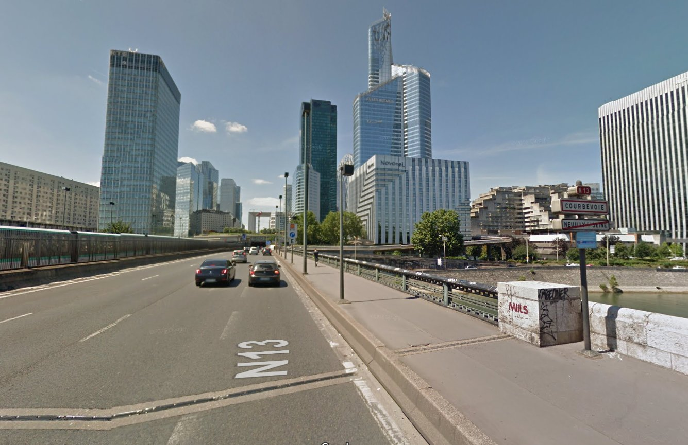
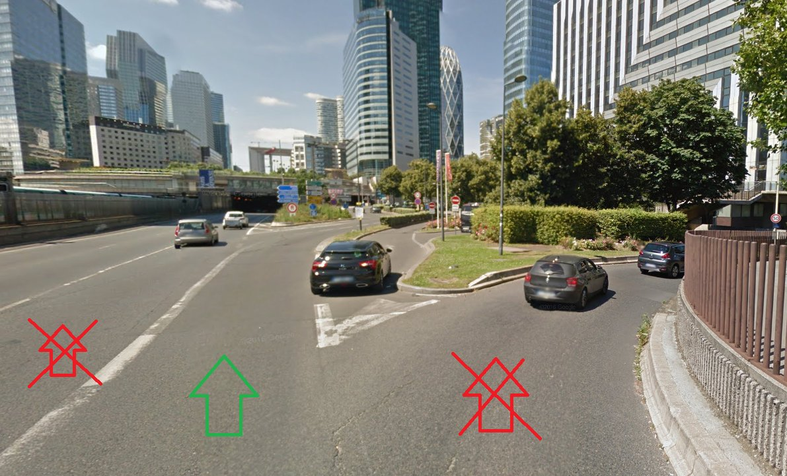
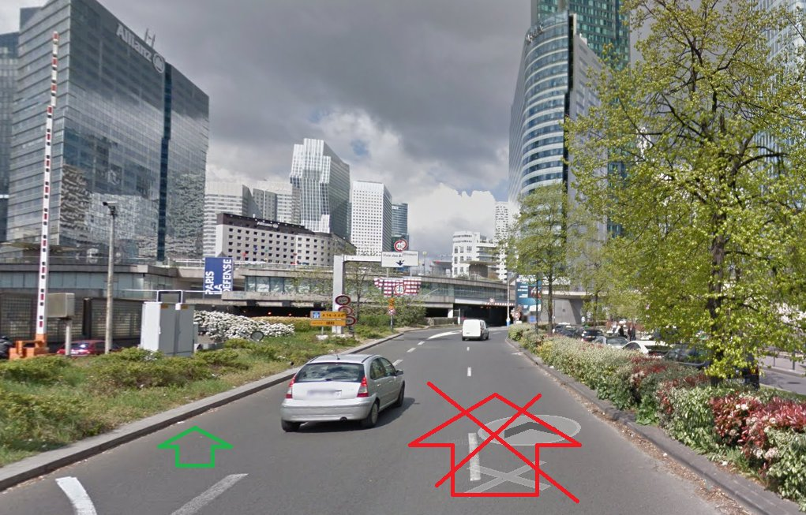
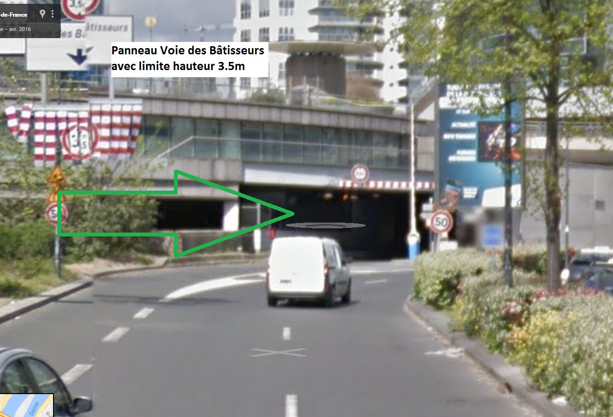
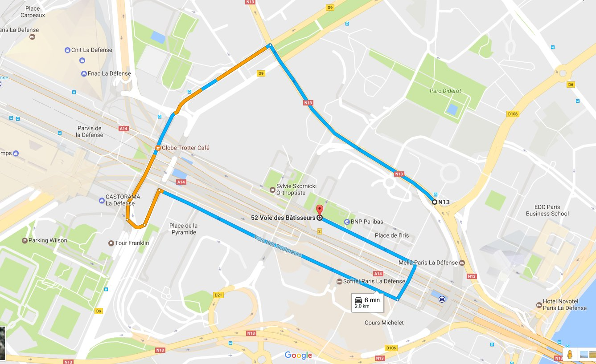
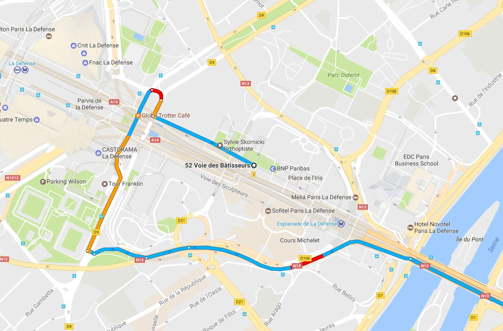

Depuis Paris en voiture, après le pont de Neuilly, vous verrez la Défense devant.

Serrez à droite. Ne prenez pas la première sortie à droite (qui va sur le quai de la Seine).

Ensuite, vous aurez à droite le Novotel, et à gauche un parterre.

Vous verrez le panneau Voie des Bâtisseurs.

Entrez dans le petit tunnel. Vous verrez le 52 Voie des Bâtisseurs.
La voie des Bâtisseurs monte dans le sens de la circulation, vous ne pouvez pas revenir en arrière. De l'autre côté, en parallèle, c'est la voie des Sculpteurs, et elle descend.
Remontez jusqu'au bout de la voie des Bâtisseurs : vous tombez sur le rond-point de la Défense. Faites le tour, à droite puis à gauche.
Vous vous trouverez sur le boulevard circulaire, et vous êtes obligé de continuer. Vous verrez une station Total. Pas de panique, vous devez simplement faire le tour.

Pour sortir vers Paris, il faut remonter la voie des Bâtisseurs.
